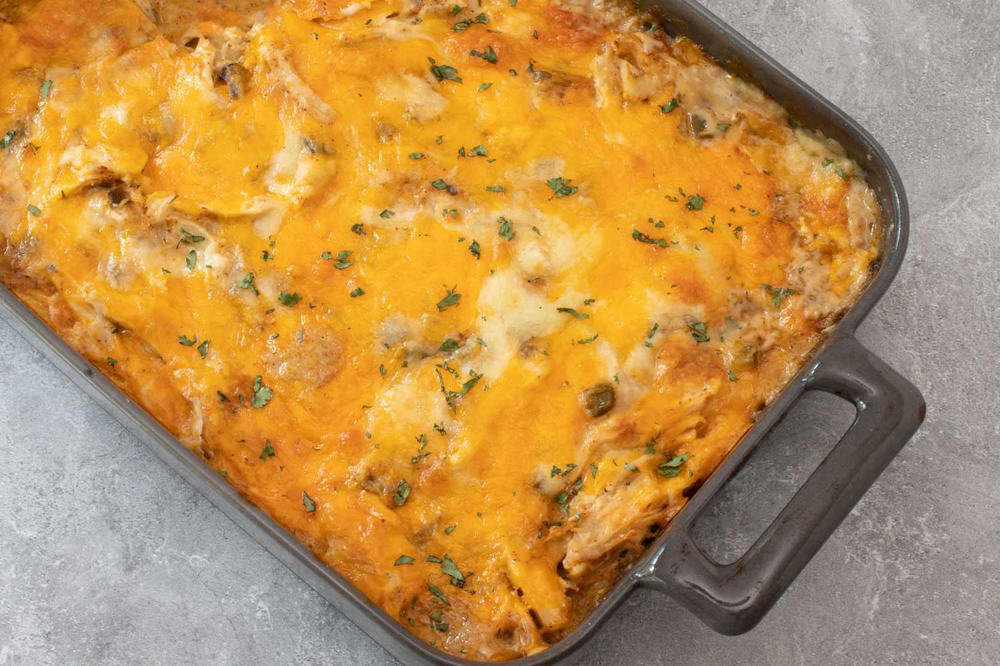

Tortilla Casserole Ingredients
Directions
- Preheat oven to 350°F
- Mix together the cream of chicken, sour cream, green chilis, and chicken
- Tear up the tortillas into 1 inch pieces and mix into the wet ingredients
- Pour mixture into a greased 9 X 13 pan
- Top with the shredded cheese
- Cover with aluminium foil and bake for 45 mins
- Remove the aluminium foil and bake for another 15 mins
- Remove from oven when the cheese is melted and the dish is bubbling around the sides